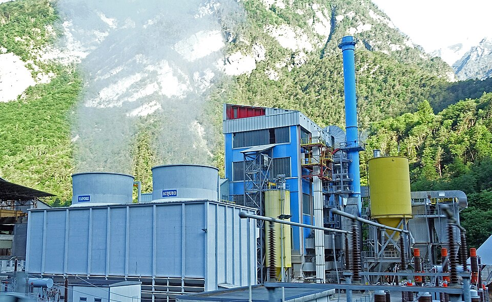

什麼是生質能？
生質能（或稱生物質能）是利用「生質物」（Biomass）轉換而來的能量。生質物指的是所有來自**生物的有機物質**，例如木材、農作物、廢棄物（如廚餘、動物糞便、農業殘渣）等。
這些有機物質儲存了來自太陽的能量。當植物進行光合作用時，它們將太陽能轉化為化學能儲存起來。當我們燃燒、消化或轉化這些生質物時，就能釋放出這些能量，用於發電、供熱或作為運輸燃料。

現代化的生質能發電廠，將有機物質轉化為電力。
🌳 生質能的主要來源
生質能的來源非常廣泛，幾乎所有的有機廢棄物都可以被利用：
- 🌾 農業廢棄物： 這是最大宗的來源之一。例如稻米收割後的稻草、玉米稈、甘蔗渣、禽畜的糞便等。
- 🌲 林業廢棄物： 例如伐木後剩下的木屑、樹枝、樹皮等。
- 🗑️ 都市廢棄物： 來自家庭和工業的有機廢棄物，例如廚餘、廢紙、下水道污泥等。
- 🌽 能源作物 (Energy Crops)： 專門為了生產能源而種植的作物，例如用來製造生質酒精的玉米、甘蔗，或用來製造生質柴油的大豆、油菜籽。
- 💧 藻類 (Algae)： 這是被視為極具潛力的第三代生質能源，生長快速且不與糧食競爭土地。
🔥 如何將「生物質」轉換為「能量」？
我們不能直接把稻草插到插座裡，必須透過轉換。主要有三種方式：
🔥 熱化學轉換 (Thermochemical)
這是最常見的方式，透過「火」和「熱」來取得能量。
- 直接燃燒 (Combustion)： 這是最古老的方式。直接燃燒木材、稻草或廢棄物，產生熱能來煮水，推動蒸汽渦輪機發電。
- 氣化 (Gasification)： 在高溫且低氧的環境下，將生物質轉換為「合成氣」（Syngas），這種氣體可以再拿去燃燒發電或合成燃料。
- 裂解 (Pyrolysis)： 在高溫且無氧的環境下，將生物質熱分解為「生物油」（Bio-oil，可作為燃料）和「生物炭」（Bio-char，可作為肥料改良土壤）。
🧪 生化轉換 (Biochemical)
這是利用微生物（如細菌、酵母菌）的生物特性來分解有機物。
- 發酵 (Fermentation)： 利用酵母菌將富含糖分或澱粉的作物（如玉米、甘蔗）轉換為「生質酒精」（乙醇，Ethanol），可以添加在汽油中使用。
- 厭氧消化 (Anaerobic Digestion)： 在無氧環境下，利用微生物分解有機廢物（如廚餘、動物糞便），產生「沼氣」（Biogas，主要成分是甲烷），可用來烹飪或發電。
⚙️ 物理轉換 (Physical)
透過物理方式將原料製成燃料。
- 壓製 (Compression)： 將木屑、稻草等壓製成高密度、規格化的「生質顆粒燃料」（Pellets），便於運輸和燃燒。
- 榨油 (Oil Extraction)： 從大豆、油菜籽中榨出油脂，再進一步轉化為「生質柴油」（Biodiesel）。
主要類型
生質能可以透過多種方式轉換為可用的能源：
- 🔥 直接燃燒： 這是最古老的方式，例如燃燒木柴取暖或煮飯。現代的生質能發電廠會燃燒木屑、農業廢料來產生蒸汽，推動渦輪機發電。
- ⛽️ 生質燃料 (Biofuels)：
- 生質酒精 (Bioethanol)： 主要由玉米、甘蔗等富含糖分或澱粉的作物發酵製成，可作為汽油的替代品或添加劑。
- 生質柴油 (Biodiesel)： 由植物油（如大豆、油菜籽）或動物脂肪提煉而成，可替代傳統柴油。
- 💨 沼氣 (Biogas)： 透過「厭氧消化」過程，讓微生物分解有機廢物（如廚餘、動物糞便、污水污泥），產生主要成分為甲烷的沼氣，可用於燃燒發電或作為燃料。
四大應用
生質能的應用廣泛，是連接廢物處理與能源生產的橋樑：
- ⚡️ 發電：利用生質物直接燃燒或燃燒沼氣發電。
- ♨️ 供熱：利用生質物作為鍋爐燃料產生蒸氣。
- 🚗 交通燃料：生產生質酒精（乙醇）或生質柴油，用作汽油或柴油的替代品或添加劑。
- ✈️ 永續航空燃料 (SAF)：利用藻類等生產更環保的航空燃料。
優點與挑戰
優點 (Pros)
- ✅ 可再生： 只要有植物和有機廢物，生質物就可以持續產生。
- ✅ 碳中和 (潛在)： 植物生長時會吸收二氧化碳，雖然燃燒時會釋放二氧化碳，但理論上可以達成平衡，減少淨碳排放 (相比於化石燃料)。
- ✅ 廢物利用： 可以處理農業廢料、都市垃圾和工業廢水，將廢物轉化為能源。
- ✅ 能源多樣化： 減少對進口化石燃料的依賴，提高能源安全。
挑戰 (Cons)
- ⚠️ 土地與糧食競爭： 大規模種植能源作物（如玉米）可能會排擠糧食作物的土地，導致糧食價格上漲。
- ⚠️ 效率問題： 某些生質能的轉換效率可能不高，且收集、運輸和處理成本可能很高。
- ⚠️ 環境影響： 雖然是可再生能源，但燃燒仍會產生空氣污染物；過度砍伐森林獲取木材也會破壞生態。
未來展望
未來的生質能發展重點在於「永續性」。科學家正致力於開發「第二代」和「第三代」生質燃料：
- ➡️ 第二代生質燃料： 使用非糧食來源，例如木質纖維素（木屑、稻草）或廢棄食用油，以避免糧食競爭問題。
- ➡️ 第三代生質燃料： 利用藻類來生產燃料。藻類生長快速、不需良田，且吸碳效率極高。
生質能作為循環經濟和綠色能源轉型的一部分，將在未來的能源結構中扮演重要的輔助角色。